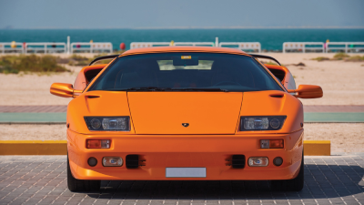

|  |
Lamborghini Diablo
|
The Lamborghini Diablo is a high-performance sports car produced by the Italian automaker Lamborghini between 1990 and 2001. It was the successor to the iconic Lamborghini Countach and was named after a famous fighting bull.
The Diablo features a mid-engine layout and is powered by a naturally aspirated 5.7-liter V12 engine in its earlier models, which produced between 485 and 529 horsepower depending on the specific variant. Later models of the Diablo, such as the Diablo SV and Diablo GT, were equipped with larger engines and produced even more power.
The Diablo's exterior design was characterized by sharp angles and aerodynamic lines, and it featured Lamborghini's signature scissor doors. The interior was also luxurious, with high-quality materials and a driver-focused cockpit.
In its prime, the Lamborghini Diablo was one of the fastest production cars in the world, with a top speed of over 200 mph. It was also known for its impressive acceleration, with some models capable of going from 0 to 60 mph in under 4 seconds. The Diablo is still considered by many to be one of Lamborghini's most iconic and beloved models.